Function to Apply Synthetic Controls to Multiple Treated Units
Source:R/multiple.synth.R
multiple.synth.RdGenerates one synthetic control for each treated unit and calculates
the difference between the treated and the synthetic control for each.
Returns a vector with outcome values for the synthetic controls,
a plot of average treatment effects, and if required generates placebos
out of the donor pool to be used in conjunction with plac.dist.
All arguments are the same used for dataprep in the Synth
package, except for treated.units, treatment.time, and
generate.placebos.
Usage
multiple.synth(
foo,
predictors,
predictors.op,
dependent,
unit.variable,
time.variable,
special.predictors,
treated.units,
control.units,
time.predictors.prior,
time.optimize.ssr,
unit.names.variable,
time.plot,
treatment.time,
gen.placebos = FALSE,
strategy = "sequential",
Sigf.ipop = 5
)
multiple_synth(
foo,
predictors,
predictors.op,
dependent,
unit.variable,
time.variable,
special.predictors,
treated.units,
control.units,
time.predictors.prior,
time.optimize.ssr,
unit.names.variable,
time.plot,
treatment.time,
gen.placebos = FALSE,
strategy = "sequential",
Sigf.ipop = 5
)Arguments
- foo
Dataframe with the panel data.
- predictors
Vector of column numbers or column-name character strings that identifies the predictors' columns. All predictors have to be numeric.
- predictors.op
A character string identifying the method (operator) to be used on the predictors. Default is
mean.- dependent
The column number or a string with the column name that corresponds to the dependent variable.
- unit.variable
The column number or a string with the column name that identifies unit numbers. The variable must be numeric.
- time.variable
The column number or a string with the column name that identifies the period (time) data. The variable must be numeric.
- special.predictors
A list object identifying additional predictors and their pre-treatment years and operators.
- treated.units
A vector identifying the
unit.variablenumbers of the treated units.- control.units
A vector identifying the
unit.variablenumbers of the control units.- time.predictors.prior
A numeric vector identifying the pretreatment periods over which the values for the outcome predictors should be averaged.
- time.optimize.ssr
A numeric vector identifying the periods of the dependent variable over which the loss function should be minimized between each treated unit and its synthetic control.
- unit.names.variable
The column number or string with column name identifying the variable with units' names. The variable must be a character.
- time.plot
A vector identifying the periods over which results are to be plotted with
path.plot- treatment.time
A numeric value with the value in
time.variablethat marks the intervention.- gen.placebos
Logical. Whether a placebo (a synthetic control) for each unit in the donor pool should be constructed. Will increase computation time.
- strategy
The processing method you wish to use "sequential" or "multiprocess". Use "multiprocess" to parallelize operations and reduce computing time. Default is
sequential.- Sigf.ipop
The Precision setting for the ipop optimization routine. Default of 5.
Value
Data frame. Each column contains the outcome values for every time-point for one unit or its synthetic control. The last column contains the time-points.
Details
The function runs dataprep and synth
for each unit identified in treated.units. It saves the vector with
predicted values for each synthetic control, to be used in estimating
average treatment effects in applications of Synthetic Controls for
multiple treated units.
For further details on the arguments, see the documentation of
Synth.
Examples
## Using the toy data from 'Synth':
library(Synth)
data(synth.data)
set.seed(42)
multi <- multiple.synth(foo = synth.data,
predictors = c("X1"),
predictors.op = "mean",
dependent = "Y",
unit.variable = "unit.num",
time.variable = "year",
treatment.time = 1990,
special.predictors = list(
list("Y", 1991, "mean")
),
treated.units = c(2,7),
control.units = c(29, 13, 17),
time.predictors.prior = c(1984:1989),
time.optimize.ssr = c(1984:1990),
unit.names.variable = "name",
time.plot = 1984:1996, gen.placebos = FALSE,
Sigf.ipop = 2)
#>
#> X1, X0, Z1, Z0 all come directly from dataprep object.
#>
#>
#> ****************
#> searching for synthetic control unit
#>
#>
#> ****************
#> ****************
#> ****************
#>
#> MSPE (LOSS V): 5.60058
#>
#> solution.v:
#> 0.0001064523 0.9998935
#>
#> solution.w:
#> 0.1728629 0.8270615 7.56699e-05
#>
#>
#> X1, X0, Z1, Z0 all come directly from dataprep object.
#>
#>
#> ****************
#> searching for synthetic control unit
#>
#>
#> ****************
#> ****************
#> ****************
#>
#> MSPE (LOSS V): 80.81988
#>
#> solution.v:
#> 1 0
#>
#> solution.w:
#> 0.002266006 0.004655154 0.9930788
#>
## Plot with the average path of the treated units and the average of their
## respective synthetic controls:
multi$p
